능력단위 애플리케이션 테스트 수행 (2001020227_23v6) / 3수준 · 평가방법 문제해결 시나리오 (100점)
| 작업지시서 | 테스트 요구사항 네 줄과 제출 형식이 여기 있습니다 |
| EX01 프로젝트 | 본문은 다 있고 테스트 네 파일이 비어 있습니다. 결함도 이미 심어져 있습니다 |
| JDK 17 이상 · 편집기 | 데이터베이스는 H2 가 메모리에서 돌아 MySQL 을 안 깔아도 됩니다 |
과제는 하나입니다. 도서 대출 프로그램 EX01 에 테스트를 써서 숨어 있는 결함을 드러내고, 그것을 고친 뒤 다른 데가 깨지지 않았는지 확인하는 일입니다. 앞의 여러 교과와 방향이 반대입니다. 지금까지는 빈 자리를 채워 넣었는데, 여기서는 이미 돌아가는 코드를 의심합니다.
| 묶음 | 능력단위요소 | 무엇을 하는가 | 배점 |
|---|---|---|---|
| ① | 애플리케이션 테스트 수행하기 | 테스트케이스 명세 · 단위 · 슬라이스 · 통합 테스트 작성 · 실행 결과 기록 | 50 |
| ② | 애플리케이션 결함 조치하기 | 결함 식별 · 우선순위 · 원인 분석 · 수정 · 회귀 · 이력 관리 | 50 |
열 항목 100점입니다. 항목 하나가 5점에서 15점까지로 폭이 넓습니다. 가장 큰 둘이 테스트 종류별 어노테이션(15점) 과 부작용을 줄이며 결함 제거(15점) 입니다.
앞 교과 「서버 프로그램 구현」 에서도 테스트를 썼습니다. 그때는 내가 만든 것이 잘 도는지 보려는 목적이었습니다. 여기서는 남이 만든 것이 틀렸다는 사실을 밝히려고 씁니다. 같은 도구인데 쓰는 마음이 다릅니다.
| 수행준거 | 준거의 말 | 이 평가에서 |
|---|---|---|
| 1.1 | 테스트 계획에 따라 서버모듈 · 화면모듈 · 데이터입출력 · 인터페이스 등 기능단위가 요구사항을 충족하는지에 대한 테스트를 수행 | 단위 · 슬라이스 · 통합 테스트를 써서 대출 · 반납 · 연체 · 재고를 확인합니다 |
| 1.2 | 테스트 수행으로 발견된 결함을 유형별로 기록 | 결함 관리대장에 네 건을 유형 · 심각도 · 우선순위로 적습니다 |
| 1.3 | 발견된 결함에 대해서 원인을 분석하고 개선 방안을 도출 | 어느 줄이 왜 틀렸는지와 어떻게 고칠지를 결과서에 적습니다 |
| 2.1 | 발견된 결함을 식별하고 조치에 대한 우선순위를 결정하고 적용 | 자료가 망가지는 결함을 앞에 두고 그 차례대로 고칩니다 |
| 2.2 | 결함이 발생한 소스를 분석하고 기존에 구현된 로직과의 연관성을 고려하여 부작용이 최소화되도록 결함을 제거 | 고칠 줄이 어디서 또 쓰이는지 찾아본 뒤 고치고 전부 다시 돌립니다 |
| 2.3 | 결함 조치로 변경되는 소스의 버전을 관리하고 조치 결과에 대한 이력을 관리 | 결함마다 커밋을 나누고 메시지에 결함 번호를 답니다 |
준거 여섯이 채점 항목 열로 쪼개져 있습니다. 앞 셋이 「찾는 일」, 뒤 셋이 「고치는 일」 로 딱 나뉜다는 점을 보십시오. 찾지 못하면 고칠 것도 없으므로 앞쪽이 막히면 뒤쪽 50점이 통째로 비게 됩니다.
열여섯 단원을 두 묶음으로 나누었고 능력단위요소와 짝이 맞습니다. 앞 아홉이 테스트를 쓰는 일, 뒤 일곱이 결함을 다루는 일입니다.
예제는 도서관의 대출 프로그램입니다. 책을 빌리고 돌려주고, 기한이 지났는지 보고, 남은 부수를 셉니다. 업무가 쉬워서 무엇이 맞는 동작인지 바로 알 수 있고, 그래서 결함이 드러났을 때 왜 틀렸는지 설명하기가 쉽습니다.
데이터베이스는 인메모리 H2 라 따로 설치할 것이 없습니다. 프로그램을 띄우면 메모리에 생기고 끄면 사라집니다. 그 안에 도서 세 권이 미리 들어가는데, 그중 하나는 재고가 0 입니다. 경계를 시험해 보라고 넣어 둔 자리입니다.
순서에 이유가 있습니다. 테스트케이스 명세서를 먼저 쓰면 요구사항을 기준으로 시험하게 됩니다. 코드를 읽고 나서 쓰면 지금 코드가 하는 일을 그대로 적게 되고, 그러면 결함이 있어도 초록으로 지나갑니다.
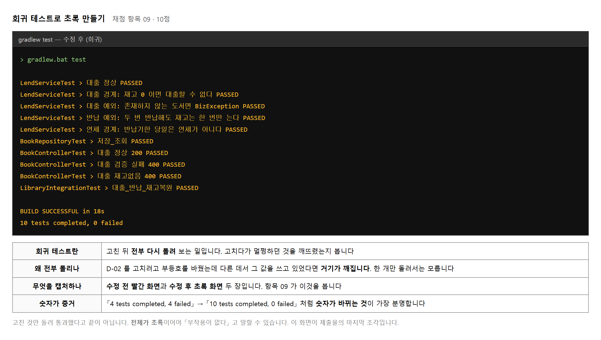
이 교과에는 브라우저로 볼 화면이 없습니다. 결과가 콘솔과 문서로만 나옵니다. 그래서 캡처를 무엇으로 남길지가 곧 제출물의 모양이 됩니다.
찍을 것은 두 장입니다. 테스트를 다 쓰고 처음 돌렸을 때의 실패 화면, 그리고 결함을 다 고친 뒤의 통과 화면입니다. 두 장의 숫자가 달라야 「결함이 있었고 고쳤다」 는 말이 증거를 갖습니다.
| 돌리는 법 | 명령 | 쓰임 |
|---|---|---|
| 전부 돌리기 | gradlew.bat test | 회귀 확인 · 제출용 캡처 |
| 한 클래스만 | gradlew.bat test --tests *LendServiceTest | 쓰는 중에 빨리 보기 |
| 자세한 보고서 | build/reports/tests/test/index.html | 실패 이유를 줄 단위로 보기 |
IDE 의 초록 세모 단추로 돌려도 되는데, 제출 캡처는 콘솔 쪽이 낫습니다. 통과 · 실패 건수가 한 줄로 찍혀 나옵니다.
목적 — 이 교과에는 화면이 없습니다. 결과가 콘솔과 문서로만 나옵니다. 그래서 무엇을 찍을지가 곧 제출물의 모양입니다.
| 언제 찍나 | 무엇을 보이나 | |
|---|---|---|
| 1 | 테스트를 다 쓰고 처음 돌렸을 때 | 실패 화면 — 「결함이 있었다」 |
| 2 | 결함을 다 고친 뒤 | 통과 화면 — 「고쳤다」 |
| 명령 | 쓰임 |
|---|---|
gradlew.bat test |
전부 돌리기 — 회귀 확인 · 제출용 캡처 |
gradlew.bat test --tests *LendServiceTest |
한 클래스만 — 쓰는 중에 빨리 보기 |
build/reports/tests/test/index.html |
자세한 보고서 — 실패 이유를 줄 단위로 |
IDE 의 초록 세모 단추로 돌려도 되는데, 제출 캡처는 콘솔 쪽이 낫습니다. 통과·실패 건수가 한 줄로 찍힙니다.
결함이 셋 있을 때의 모습입니다. 실패마다 이유가 다릅니다.
Failures (3):
대출 정상: 재고가 1 줄고 반납기한이 14일 뒤로 잡힌다
=> org.opentest4j.AssertionFailedError:
expected: 2026-10-03 (java.time.LocalDate)
but was: 2026-09-26 (java.time.LocalDate)
연체 경계: 기한과 «같은 시각» 은 연체가 아니다
=> org.opentest4j.AssertionFailedError:
Expecting value to be false but was true
대출 경계: 재고 0 이면 대출할 수 없다
=> java.lang.AssertionError:
Expecting code to raise a throwable.
[ 0 tests successful ]
[ 3 tests failed ]
Test run finished after 4078 ms
[ 3 tests found ]
[ 3 tests successful ]
[ 0 tests failed ]
expected … but was … 는 값이 틀린 것,
Expecting value to be false 는 참·거짓이 뒤집힌 것,
Expecting code to raise a throwable 는
막아야 하는데 안 막은 것입니다.
메시지만 읽고도 어디를 볼지 정해집니다 — 실습 11 에서 다시 씁니다.| 제출물 | 덮는 채점 항목 |
|---|---|
| 테스트 코드 네 벌 | 01 · 02 · 03 |
| 테스트케이스 명세서 | 04 · 05 |
| 실패 화면 · 통과 화면 | 06 · 10 |
| 결함 관리대장 | 07 · 08 |
| 테스트 실행결과서 | 09 · 10 |
| 나오는 것 | 볼 곳 |
|---|---|
gradlew 를 못 찾음 |
프로젝트 맨 위 폴더에서 쳐야 합니다 |
0 tests found |
테스트 파일이 src/test/java 밑에 있는지 보십시오 |
한글 @DisplayName 이 깨짐 |
콘솔 문제입니다. 보고서 HTML 로 보십시오 |
제출물 — 제출물 목록표 + 돌리는 명령 셋을 적은 메모
스스로 확인 — ① 찍을 것이 두 장인 것을 압니까 ② 실패 화면을 먼저 찍어야 하는 까닭을 말할 수 있습니까 ③ 콘솔로 돌려 봤습니까
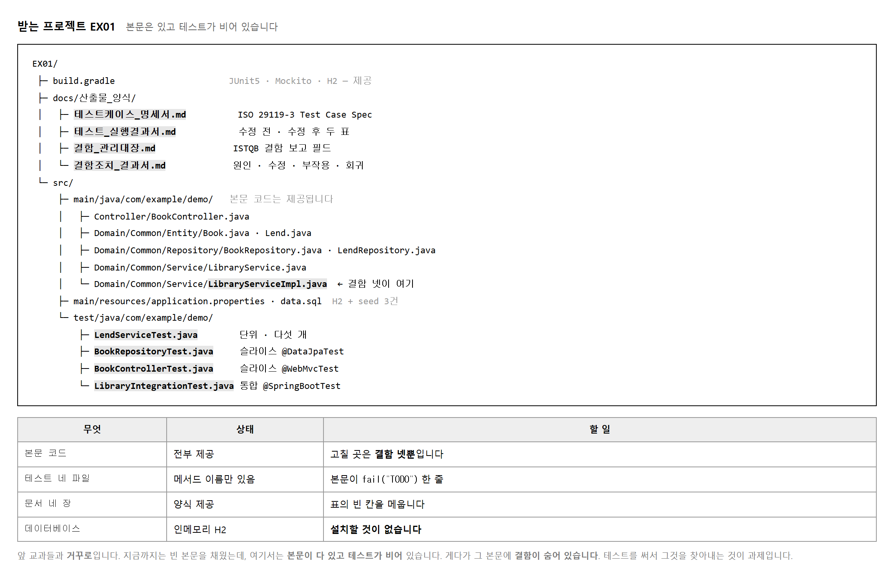
테스트 파일은 껍데기만 있습니다. 클래스 이름과 메서드 이름은 정해져 있고 본문이 한 줄짜리 실패로 채워져 있습니다.
class LendServiceTest {
@Test
@DisplayName("대출 정상: 재고가 1 줄고 반납기한이 설정된다")
void lend_정상() {
fail("TODO: 테스트를 작성하세요");
}
@Test
@DisplayName("대출 경계: 재고 0 이면 대출할 수 없다")
void lend_재고0_예외() {
fail("TODO: 테스트를 작성하세요");
}
// … 세 개 더
}
@DisplayName 에 적힌 말이 시험해야 할 내용을 알려 줍니다.
「재고 0 이면 대출할 수 없다」 가 곧 기대 결과입니다.
메서드 이름을 바꾸지 말고 그대로 두십시오. 채점할 때 이름으로 찾습니다.
// application.properties — 이미 들어 있습니다 spring.datasource.url=jdbc:h2:mem:libdb;DB_CLOSE_DELAY=-1;MODE=MySQL spring.jpa.hibernate.ddl-auto=create-drop spring.h2.console.enabled=true server.port=8090
gradlew.bat bootRun 으로 띄운 뒤
http://localhost:8090/h2-console 로 들어가면 seed 세 건이 보입니다.
JDBC URL 칸에 위의 jdbc:h2:mem:libdb 를 그대로 넣어야 합니다.
여기서 재고가 0 인 책을 눈으로 확인해 두면 뒤가 편합니다.
목적 — 받은 프로젝트는 본문은 있고 테스트가 비어 있습니다. 비어 있다고 아무거나 쓰면 안 됩니다. 껍데기가 이미 시험할 내용을 알려 주고 있습니다.
gradlew.bat bootRun
# application.properties — 이미 들어 있습니다
spring.datasource.url=jdbc:h2:mem:libdb;DB_CLOSE_DELAY=-1;MODE=MySQL
spring.jpa.hibernate.ddl-auto=create-drop
spring.h2.console.enabled=true
server.port=8090
jdbc:h2:mem: 는 메모리 안에서만 도는 데이터베이스입니다.
띄우면 생기고 끄면 사라집니다 — 시험용으로 딱 맞습니다.
MODE=MySQL 은 MySQL 처럼 굴라는 뜻이라
SQL 문법이 거의 같습니다.class LendServiceTest {
@Test
@DisplayName("대출 정상: 재고가 1 줄고 반납기한이 설정된다")
void lend_정상() {
fail("TODO: 테스트를 작성하세요");
}
@Test
@DisplayName("대출 경계: 재고 0 이면 대출할 수 없다")
void lend_재고0_예외() {
fail("TODO: 테스트를 작성하세요");
}
// … 세 개 더
}
@DisplayName 을 «기대 결과» 로 옮겨 적습니다@DisplayName 에 적힌 말 |
여기서 읽어 낼 것 |
|---|---|
| 재고가 1 줄고 | 대출 뒤 availableCopies 가 하나 준다 |
| 반납기한이 설정된다 | 요구사항의 14일 뒤여야 한다 (실습 4) |
| 재고 0 이면 | 0 이 경계다 — 음수가 아니다 |
| 대출할 수 없다 | 예외가 나야 한다 — 조용히 넘어가면 안 된다 |
lend_재고0_예외 같은 이름은
채점할 때 이름으로 찾습니다.
보기 좋게 고쳤다가 채점자가 못 찾으면 없는 것이 됩니다.
@DisplayName 도 마찬가지입니다.fail() 을 그대로 두고 한 번 돌려 봅니다gradlew.bat test
전부 실패합니다. 이것이 출발선입니다.
fail("TODO: …") 은 「아직 안 썼다」 를 소리 내어 알리는 장치입니다.
빈 메서드로 두면 통과해 버려서 안 쓴 것을 모릅니다.
찾을 것 : fail("TODO
나오는 곳 : 테스트 네 파일
| 파일 | 어느 층인가 |
|---|---|
LendServiceTest | 단위 — Mockito (실습 7) |
BookRepositoryTest | 슬라이스 — @DataJpaTest (실습 8) |
BookControllerTest | 슬라이스 — @WebMvcTest (실습 8) |
LibraryIntegrationTest | 통합 — @SpringBootTest (실습 9) |
넷을 고루 채우는 것이 항목 01(15점)과 04(10점)입니다. 단위만 다섯 개 쓰고 나머지를 비우면 반쯤만 받습니다.
| 나오는 것 | 볼 곳 |
|---|---|
Port 8090 was already in use |
앞서 띄운 것이 안 죽었습니다 |
Database "mem:libdb" not found |
DB_CLOSE_DELAY=-1 이 빠졌습니다 —
마지막 연결이 끊기면 통째로 사라집니다 |
| H2 콘솔이 안 열림 | spring.h2.console.enabled=true 를 보십시오.
주소는 /h2-console 입니다 |
| 테스트가 전부 통과로 나옴 | fail() 을 지웠습니다.
아직 아무것도 안 썼는데 통과하면 안 됩니다 |
제출물 — 기동 화면 + 전부 실패하는 첫 화면 +
@DisplayName 을 기대 결과로 옮긴 표
스스로 확인 —
① H2 로 떴습니까
② 메서드 이름을 안 바꿨습니까
③ 채울 파일이 넷인 것을 셌습니까
④ fail() 을 안 지웠습니까
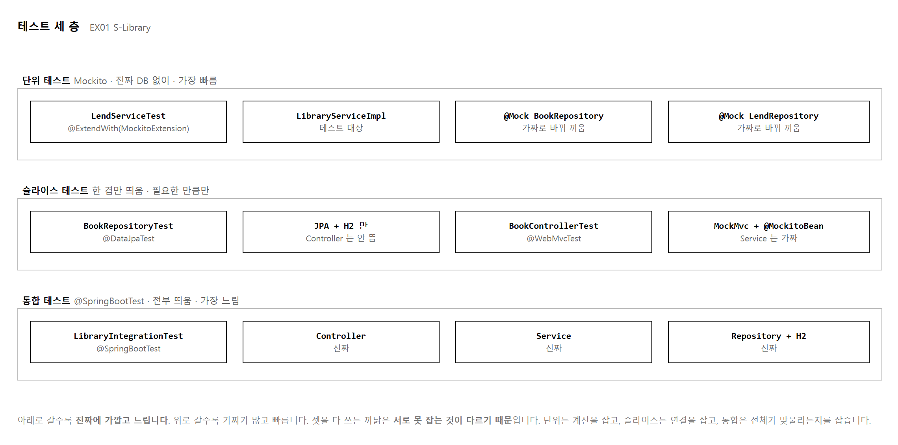
하나만 쓰면 놓치는 데가 생깁니다.
채점 항목 01 이 이 네 가지 어노테이션을 봅니다.
| 어노테이션 | 층 | 띄우는 것 |
|---|---|---|
| @ExtendWith(MockitoExtension.class) | 단위 | 아무것도 안 띄웁니다 |
| @DataJpaTest | 슬라이스 | JPA · H2 · Repository |
| @WebMvcTest | 슬라이스 | Controller · MockMvc |
| @SpringBootTest | 통합 | 전부 |
15점짜리 항목이고 네 가지가 코드에 다 보여야 온전히 받습니다.
여기에 @Test 와 @DisplayName 이 함께 붙어 있어야 합니다.
목적 — 채점 항목 01 · 15점이고, 네 가지 어노테이션이 코드에 다 보여야 온전히 받습니다. 왜 셋을 다 쓰는지는 돌려 보면 압니다.
| 어노테이션 | 층 | 띄우는 것 |
|---|---|---|
@ExtendWith(MockitoExtension.class) | 단위 | 아무것도 안 띄웁니다 |
@DataJpaTest | 슬라이스 | JPA · H2 · Repository |
@WebMvcTest | 슬라이스 | Controller · MockMvc |
@SpringBootTest | 통합 | 전부 |
@ExtendWith(MockitoExtension.class)
class LendServiceTest {
@Mock BookRepository bookRepo;
@Mock LendRepository lendRepo;
@InjectMocks LibraryService service;
⋯
}
Test run finished after 4078 ms
[ 3 tests successful ]
[ 0 tests failed ]
@WebMvcTest(BookController.class)
class BookControllerTest {
@Autowired MockMvc mvc;
@MockitoBean LibraryService service; // 진짜 Service 대신 가짜를 끼웁니다
⋯
}
[ 2 tests successful ]
[ 0 tests failed ]
@MockitoBean 은 @Mock 과 다릅니다.
@Mock 은 그냥 가짜 객체를 만들고,
@MockitoBean 은 스프링 통에 든 진짜를 가짜로 바꿔 끼웁니다.
슬라이스는 스프링을 띄우므로 후자를 씁니다.
예전 이름인 @MockBean 으로 배웠다면
지금 프로젝트의 판을 확인하십시오.@SpringBootTest
class LibraryIntegrationTest {
@Autowired LibraryService service; // 가짜가 하나도 없습니다
@Autowired BookRepository bookRepo;
⋯
}
[ 2 tests successful ]
[ 0 tests failed ]
두 시험이 같은 것을 보는 것 같지만 다릅니다. 나란히 놓고 보십시오.
| 단위 (가짜 저장소) | 통합 (진짜 저장소) |
|---|---|
assertThat(book.getAvailableCopies())
메모리 안의 객체만 봅니다 |
Book after = bookRepo.findById(id)…;
다시 꺼내서 봅니다 |
@Transactional 을 빠뜨렸거나 쿼리 이름을 잘못 지어도
단위 테스트는 통과합니다.
반대로 통합만 쓰면 다 돌기는 하는데
어디가 틀렸는지 짚기 어렵고 느려서 자주 못 돌립니다.| 층 | 띄우는 것 | 언제 돌리나 |
|---|---|---|
| 단위 | 없음 | 코드를 고칠 때마다 |
| 슬라이스 | 일부 | 그 층을 손볼 때 |
| 통합 | 전부 | 커밋하기 전에 한 번 |
| 나오는 것 | 볼 곳 |
|---|---|
package org.springframework.boot.test.autoconfigure.orm.jpa
does not exist |
판이 다릅니다. Boot 4 는 슬라이스 어노테이션을
모듈별로 쪼갰습니다 —
@WebMvcTest 가
org.springframework.boot.webmvc.test.autoconfigure
로 옮겼습니다. 프로젝트의 Boot 판에 맞춰 import 하십시오 |
Name for argument of type [java.lang.Long] not specified …
Ensure that the compiler uses the '-parameters' flag |
@PathVariable 이 이름을 못 찾습니다.
빌드에 -parameters 를 넣거나
@PathVariable("id") 처럼 이름을 적으십시오 |
UnnecessaryStubbingException |
when(...) 을 걸어 놓고 안 썼습니다.
지우거나 lenient() 를 쓰십시오 |
| 단위 테스트가 느림 | @SpringBootTest 가 섞여 있습니다.
단위에는 스프링이 없어야 합니다 |
제출물 — 네 어노테이션이 보이는 코드 + 세 층의 통과 화면 + 단위와 통합을 견준 표
스스로 확인 —
① 네 가지가 코드에 다 있습니까
② @MockitoBean 과 @Mock 의 차이를 말할 수 있습니까
③ 단위만 쓰면 못 잡는 것을 한 문장으로 말할 수 있습니까
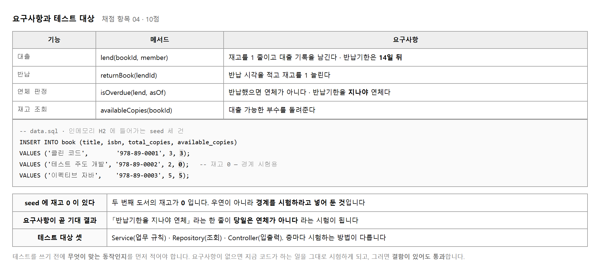
테스트는 기대 결과와 실제 결과를 견주는 일입니다. 기대 결과가 없으면 견줄 것이 없습니다. 그래서 코드를 열기 전에 「무엇이 맞는 동작인가」 를 한 줄씩 적어 두어야 합니다.
여기서 실수가 많이 납니다.
코드를 읽고 나서 기대 결과를 적으면 코드가 하는 일이 기준이 되어 버립니다.
availableCopies() < 0 을 보고 「음수면 막는구나」 하고 적으면
재고 0 은 시험조차 하지 않게 됩니다.
수행준거 1.1 이 「서버모듈 · 화면모듈 · 데이터입출력 · 인터페이스」 를 듭니다. 이 과제에는 화면이 없으므로 나머지 셋을 봅니다.
| 기능단위 | 대상 | 어느 테스트로 |
|---|---|---|
| 서버모듈 | LibraryServiceImpl | 단위 (Mockito) |
| 데이터입출력 | BookRepository | 슬라이스 (@DataJpaTest) |
| 인터페이스 | BookController · REST | 슬라이스 (@WebMvcTest) |
셋을 고루 덮었는지가 항목 04 의 10점입니다. 단위 테스트만 다섯 개 쓰고 나머지를 비워 두면 반쯤만 받습니다.
목적 — 채점 항목 04 · 10점입니다. 테스트는 기대 결과와 실제 결과를 견주는 일인데, 기대 결과가 없으면 견줄 것이 없습니다.
availableCopies() < 0 을 보고 「음수면 막는구나」 하고 적으면
재고 0 은 시험조차 하지 않게 됩니다.
그 결함은 영영 안 잡힙니다.요구사항
R-01 대출하면 재고가 1 줄어든다
R-02 반납기한은 대출일로부터 14일 뒤다
R-03 재고가 0 이면 대출할 수 없다
R-04 반납기한을 지나야 연체다
| 표시한 말 | 여기서 읽어 낼 시험 |
|---|---|
| 1 줄어든다 | 3 → 2 인지. 2 나 0 이면 틀린 것 |
| 14일 뒤 | 7일도 30일도 아니다 — 숫자를 직접 대 봅니다 |
| 0 이면 | 0 이 경계다. 음수가 아니다 |
| 지나야 | 같은 시각은 연체가 아니다 |
마지막 줄이 특히 값을 합니다. 「지나야 연체」 는 기한과 같은 시각이면 아직 연체가 아니라는 뜻이고, 이 한 줄이 결함 하나를 잡아냅니다 (실습 11).
-- data.sql (제공물)
INSERT INTO book (title, total_copies, available_copies) VALUES
('자바의 정석', 3, 3),
('이펙티브 자바', 2, 2),
('품절된 책', 1, 0); -- ← 경계 시험용
재고 0 인 책이 «일부러» 들어 있습니다. R-03 을 시험하라고 넣어 둔 것입니다. 제공된 데이터를 보면 무엇을 시험하라는지가 보입니다.
수행준거 1.1 이 「서버모듈 · 화면모듈 · 데이터입출력 · 인터페이스」 를 듭니다. 이 과제에는 화면이 없으므로 나머지 셋을 봅니다.
| 기능단위 | 대상 | 어느 테스트로 |
|---|---|---|
| 서버모듈 | LibraryService |
단위 — Mockito |
| 데이터입출력 | BookRepository |
슬라이스 — @DataJpaTest |
| 인터페이스 | BookController · REST |
슬라이스 — @WebMvcTest |
셋을 고루 덮었는지가 항목 04 의 10점입니다. 단위 테스트만 다섯 개 쓰고 나머지를 비워 두면 반쯤만 받습니다.
R-01 재고 1 감소 → 서버모듈 (단위) + 데이터입출력 (통합에서 «진짜로» 줄었는지)
R-02 14일 뒤 → 서버모듈 (단위)
R-03 재고 0 차단 → 서버모듈 (단위) + 인터페이스 (슬라이스에서 응답 확인)
R-04 지나야 연체 → 서버모듈 (단위)
R-01 과 R-03 이 두 칸에 걸쳐 있는 것을 보십시오. 같은 요구사항이라도 층마다 보는 것이 다릅니다 (실습 3 절차 5).
| 이런 상태면 | 볼 곳 |
|---|---|
| 요구사항에 숫자가 없음 | 「빨리 처리된다」 같은 말은 시험할 수 없습니다. 숫자나 경계로 바꾸십시오 |
| 요구사항이 코드와 똑같음 | 코드를 보고 적었습니다. 작업지시서를 다시 읽으십시오 |
| 기능단위가 하나로 몰림 | 항목 04 에서 반쯤만 받습니다 |
data.sql 이 안 들어감 |
spring.jpa.hibernate.ddl-auto=create-drop 과
순서가 엇갈렸습니다.
spring.jpa.defer-datasource-initialization=true 를 보십시오 |
제출물 — 요구사항 네 줄(표시 포함) + 기능단위 표 + 맞물림 표
스스로 확인 — ① 코드를 안 읽고 적었습니까 ② 줄마다 숫자나 경계가 있습니까 ③ 기능단위 셋을 다 덮었습니까 ④ 「지나야」 를 표시했습니까
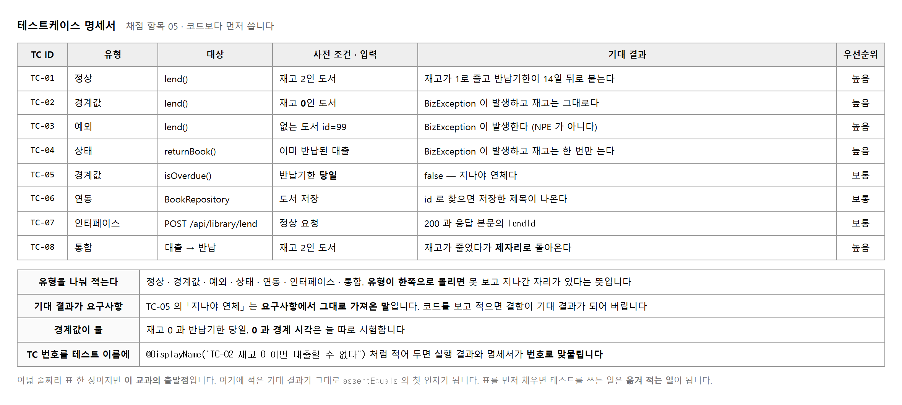
docs/산출물_양식/테스트케이스_명세서.md 를 열면 빈 표가 있습니다.
칸 이름은 ISO/IEC/IEEE 29119-3 의 테스트 케이스 명세 항목을 따릅니다.
낯설어 보이지만 채울 내용은 앞 단원에서 이미 정해 두었습니다.
| 칸 | 무엇을 적나 | 보기 |
|---|---|---|
| TC ID | 번호 | TC-02 |
| 유형 | 정상 · 경계값 · 예외 · 상태 … | 경계값 |
| 대상 | 어느 메서드 · 어느 요청 | lend() |
| 사전 조건 | 어떤 상태에서 시작하나 | 재고 0 인 도서 |
| 기대 결과 | 무엇이 되어야 하나 | BizException 발생 · 재고 그대로 |
| 우선순위 | 먼저 시험할 것인가 | 높음 |
여덟 줄을 유형별로 세어 보십시오. 정상 하나, 경계값 둘, 예외 하나, 상태 하나, 그리고 연동 · 인터페이스 · 통합이 하나씩입니다. 한쪽으로 몰려 있으면 못 보고 지나간 자리가 있습니다. 정상만 여덟 줄이면 결함은 하나도 안 잡힙니다.
@DisplayName 에 함께 적어 두십시오.
@DisplayName("TC-02 재고 0 이면 대출할 수 없다") 처럼 하면
콘솔에 찍힌 실패 줄과 명세서의 줄이 번호로 맞물립니다.
뒤에 실행결과서와 관리대장을 쓸 때 옮겨 적기만 하면 됩니다.
목적 — 표를 먼저 채우면 코드는 옮겨 적기가 됩니다.
기대 결과 칸이 그대로 assert 의 첫 인자가 됩니다.
docs/산출물_양식/테스트케이스_명세서.md 에 빈 표가 있습니다.
칸 이름은 ISO/IEC/IEEE 29119-3 을 따릅니다.
낯설어 보이지만 채울 내용은 실습 4 에서 이미 정했습니다.
| 칸 | 무엇을 적나 | 보기 |
|---|---|---|
| TC ID | 번호 | TC-02 |
| 유형 | 정상 · 경계값 · 예외 · 상태 … | 경계값 |
| 대상 | 어느 메서드 · 어느 요청 | lend() |
| 사전 조건 | 어떤 상태에서 시작하나 | 재고 0 인 도서 |
| 기대 결과 | 무엇이 되어야 하나 | 예외 발생 · 재고 그대로 |
| 우선순위 | 먼저 시험할 것인가 | 높음 |
TC ID | 유형 | 대상 | 사전 조건 | 기대 결과
------+----------+-----------------+------------------+---------------------------
TC-01 | 정상 | lend() | 재고 3 인 도서 | 재고 2 · 기한 = 오늘+14일
TC-02 | 경계값 | lend() | 재고 0 인 도서 | 예외 발생 · 재고 그대로
TC-03 | 경계값 | isOverdue() | now = 기한 | false (아직 연체 아님)
TC-04 | 예외 | lend() | 없는 도서 id | 예외 발생
TC-05 | 상태 | lend() | 대출 성공 직후 | 대출 기록이 1 늘어남
TC-06 | 연동 | BookRepository | 책 셋이 저장됨 | 제목 «자바» 로 2건
TC-07 | 인터페이스| POST /lend | 재고 있는 도서 | 200 · 기한이 본문에
TC-08 | 통합 | 전체 흐름 | 재고 3 인 도서 | 다시 꺼내도 재고 2
| 유형 | 몇 줄 | 없으면 |
|---|---|---|
| 정상 | 1 | — |
| 경계값 | 2 | 결함이 하나도 안 잡힙니다 |
| 예외 | 1 | 막아야 할 것을 안 막아도 모릅니다 |
| 상태 | 1 | 부작용을 못 봅니다 |
| 연동 · 인터페이스 · 통합 | 각 1 | 항목 04 에서 반쯤만 받습니다 |
@DisplayName 에 «함께» 적습니다@DisplayName("TC-02 대출 경계: 재고 0 이면 대출할 수 없다")
void lend_재고0_예외() { … }
이렇게 하면 콘솔에 찍힌 실패 줄과 명세서의 줄이 번호로 맞물립니다.
Failures (1):
TC-02 대출 경계: 재고 0 이면 대출할 수 없다
=> java.lang.AssertionError: Expecting code to raise a throwable.
뒤에 실행결과서(실습 15)와 관리대장(실습 12)을 쓸 때 옮겨 적기만 하면 됩니다. 번호가 없으면 어느 줄이 어느 시험인지 매번 찾아야 합니다.
| 명세서의 기대 결과 | 테스트 코드 |
|---|---|
| 재고 2 | assertThat(book.getAvailableCopies()).isEqualTo(2); |
| 예외 발생 | assertThatThrownBy(…).isInstanceOf(OutOfStockException.class); |
| 재고 그대로 | verify(lendRepo, never()).save(any()); |
| false (아직 연체 아님) | assertThat(service.isOverdue(lend, due)).isFalse(); |
「재고 그대로」 를 코드로 옮기는 것이 셋째 줄입니다. 돌아온 값만 보면 부작용을 못 봅니다 — 실습 6 에서 이어집니다.
| 이런 상태면 | 볼 곳 |
|---|---|
| 기대 결과가 「정상 동작」 처럼 적힘 | 코드로 못 옮깁니다. 숫자나 참·거짓으로 바꾸십시오 |
| 유형이 정상만 있음 | 결함을 하나도 못 잡습니다. 경계를 둘 이상 넣으십시오 |
TC 번호가 @DisplayName 에 없음 |
실습 12 · 15 에서 매번 찾아야 합니다 |
| 여덟 줄이 다 단위 테스트 | 연동 · 인터페이스 · 통합이 빠졌습니다 (실습 4 절차 4) |
제출물 — 테스트케이스_명세서.md 여덟 줄 + 유형별 개수 +
기대 결과를 코드로 옮긴 표
스스로 확인 —
① 여덟 줄이 다 찼습니까
② 경계값이 둘 이상입니까
③ TC 번호를 @DisplayName 에 넣었습니까
④ 기대 결과가 코드로 옮겨집니까
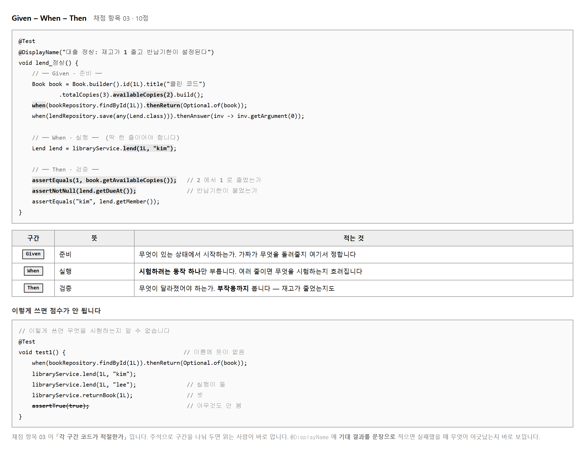
테스트를 읽는 사람은 「어떤 상태에서 무엇을 했더니 어떻게 되었나」 를 알고 싶어 합니다. 그 셋이 섞여 있으면 읽는 데 시간이 걸립니다. 주석 세 줄로 나눠 두면 읽는 사람이 바로 찾습니다.
| 구간 | 적는 것 | 흔한 실수 |
|---|---|---|
| Given | 상태 만들기 · 가짜 정하기 | 필요 없는 것까지 다 만들어 둡니다 |
| When | 시험할 동작 하나 | 여러 줄을 부릅니다 |
| Then | 달라진 것 확인 | 돌아온 값만 보고 부작용을 안 봅니다 |
Then 에서 부작용까지 보는 것이 이 과제에서 크게 값을 합니다.
대출은 Lend 를 돌려주지만 재고도 줄어야 합니다.
돌아온 값만 보면 재고가 안 줄어도 통과합니다.
// Then — 돌아온 값과 부작용을 함께 봅니다
assertEquals("kim", lend.getMember()); // 돌아온 값
assertNotNull(lend.getDueAt()); // 돌아온 값
assertEquals(1, book.getAvailableCopies()); // 부작용
assertTrue(true) 나 확인이 없는 테스트는 늘 통과합니다.
통과하는데 아무것도 알려 주지 않으므로 점수가 되지 않습니다.
「무엇이 달라졌어야 하는가」 를 값으로 적으십시오.
목적 — 채점 항목 03 · 10점입니다. 구간을 나누는 것은 보기 좋으라고 하는 일이 아닙니다. Then 에서 무엇을 봐야 하는지가 여기서 정해집니다.
| 구간 | 적는 것 | 흔한 실수 |
|---|---|---|
| Given | 상태 만들기 · 가짜 정하기 | 필요 없는 것까지 다 만들어 둡니다 |
| When | 시험할 동작 하나 | 여러 줄을 부릅니다 |
| Then | 달라진 것 확인 | 돌아온 값만 보고 부작용을 안 봅니다 |
@Test
@DisplayName("TC-01 대출 정상: 재고가 1 줄고 반납기한이 14일 뒤로 잡힌다")
void lend_정상() {
// Given — 재고 3권짜리 책이 있다
Book book = new Book("자바의 정석", 3, 3);
when(bookRepo.findById(1L)).thenReturn(Optional.of(book));
when(lendRepo.save(any(Lend.class))).thenAnswer(i -> i.getArgument(0));
// When
Lend lend = service.lend(1L, "hong");
// Then
assertThat(book.getAvailableCopies()).isEqualTo(2); // 부작용
assertThat(lend.getDueAt().toLocalDate()) // 돌아온 값
.isEqualTo(LocalDateTime.now().plusDays(14).toLocalDate());
verify(lendRepo).save(any(Lend.class)); // 불렸는가
}
재고를 줄이는 줄을 일부러 지우고 두 시험을 각각 돌려 보십시오.
// book.decrease(); ← 결함: 재고를 안 줄인다
돌아온 값만 보는 시험은 이렇게 됩니다.
[ 1 tests successful ]
[ 0 tests failed ]
재고까지 보는 시험은 이렇게 됩니다.
expected: 2
but was: 3
[ 2 tests successful ]
[ 1 tests failed ]
대출 하나에 세 가지가 달라집니다. Then 에 셋 다 적습니다.
| 달라지는 것 | 어떻게 보나 | |
|---|---|---|
| ① | 돌아온 대출 기록 | assertThat(lend.getDueAt())… |
| ② | 책의 재고 | assertThat(book.getAvailableCopies())… |
| ③ | 저장이 불렸는가 | verify(lendRepo).save(any()); |
// Then — 막혔으니 저장까지 «가면 안 됩니다»
verify(lendRepo, never()).save(any());
실습 5 의 명세서에 적은 「재고 그대로」 가 이 줄입니다. 예외가 났는지만 보고 끝내면, 예외를 던지기 전에 이미 저장해 버린 코드를 못 잡습니다.
| 점수가 안 되는 모양 | 왜 |
|---|---|
| 주석 없이 열 줄이 붙어 있음 | 읽는 사람이 어디까지가 준비인지 모릅니다 |
| When 에 세 줄이 들어 있음 | 실패했을 때 어느 줄 때문인지 모릅니다 |
Then 이 assertNotNull 한 줄 |
거의 아무것도 안 봅니다. 값이 틀려도 통과합니다 |
| 나오는 것 | 볼 곳 |
|---|---|
UnnecessaryStubbingException |
Given 에 안 쓰는 가짜를 만들어 뒀습니다. 「필요 없는 것까지 다 만든다」 가 이것입니다 |
Wanted but not invoked: lendRepo.save() |
verify 가 안 불린 것을 잡았습니다 —
When 이 제대로 안 돌았습니다 |
NullPointerException 이 When 에서 |
Given 에서 가짜를 안 정했습니다.
when(...).thenReturn(...) 을 빠뜨렸는지 보십시오 |
| Then 이 늘 통과 | 절차 3 의 그 상태입니다 — 부작용을 안 보고 있습니다 |
제출물 — 세 구간으로 나눈 테스트 코드 + 부작용을 뺐을 때와 넣었을 때 두 화면 + 부작용 셋 표
스스로 확인 —
① 주석 세 줄이 있습니까
② When 이 한 줄입니까
③ Then 에 부작용이 들어 있습니까
④ never() 를 쓴 곳이 있습니까
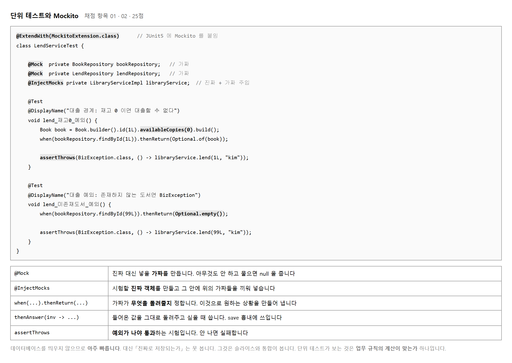
「재고가 0 인 도서로 대출해 보기」 를 진짜 데이터베이스로 하려면 그런 데이터를 넣고 지우는 일이 따라붙습니다. 가짜를 쓰면 한 줄로 그 상황을 만듭니다.
// 이 한 줄이 「재고 0 인 책이 있다」 는 상황입니다 Book book = Book.builder().id(1L).availableCopies(0).build(); when(bookRepository.findById(1L)).thenReturn(Optional.of(book));
| 쓰는 것 | 뜻 |
|---|---|
| @Mock | 가짜를 만듭니다. 정해 주지 않은 호출은 null 이나 빈 값을 돌려줍니다 |
| @InjectMocks | 시험할 진짜 객체를 만들고 그 안에 가짜를 끼워 넣습니다 |
| when().thenReturn() | 가짜가 돌려줄 값을 정합니다 |
| when().thenThrow() | 가짜가 예외를 던지게 합니다 |
| assertThrows | 예외가 나야 통과하는 확인입니다 |
assertThrows(BizException.class,
() -> libraryService.lend(1L, "kim"));
두 번째 인자가 실행할 코드 덩이입니다. 이것을 돌려 보고
BizException 이 나오면 통과, 안 나오거나 다른 예외가 나오면 실패입니다.
이 과제의 결함 둘이 바로 이 확인에 걸립니다.
Optional.empty() 를 돌려주게 하는 것이 「없는 도서」 상황입니다.
when(bookRepository.findById(99L)).thenReturn(Optional.empty()) 한 줄이면
데이터베이스를 건드리지 않고 그 상황을 만들 수 있습니다.
목적 — 채점 항목 01 · 02 로 25점입니다. 이 교과에서 가장 큰 묶음이고, 결함 둘이 여기서 잡힙니다.
「재고가 0 인 도서로 대출해 보기」 를 진짜 데이터베이스로 하려면 그런 데이터를 넣고, 시험하고, 지우는 일이 따라붙습니다. 가짜를 쓰면 한 줄로 그 상황을 만듭니다.
// 이 두 줄이 「재고 0 인 책이 있다」 는 상황입니다
Book book = new Book("품절된 책", 1, 0);
when(bookRepo.findById(2L)).thenReturn(Optional.of(book));
| 쓰는 것 | 뜻 |
|---|---|
@Mock |
가짜를 만듭니다. 정해 주지 않은 호출은 빈 값을 돌려줍니다 — 절차 3 의 표를 보십시오 |
@InjectMocks |
시험할 진짜 객체를 만들고 그 안에 가짜를 끼워 넣습니다 |
when().thenReturn() | 가짜가 돌려줄 값을 정합니다 |
when().thenThrow() | 가짜가 예외를 던지게 합니다 |
assertThatThrownBy() | 예외가 나야 통과하는 확인입니다 |
| 만들 상황 | 한 줄 |
|---|---|
| 재고 있는 책 | thenReturn(Optional.of(new Book("자바의 정석", 3, 3))) |
| 재고 0 인 책 | thenReturn(Optional.of(new Book("품절된 책", 1, 0))) |
| 없는 책 | thenReturn(Optional.empty()) |
셋째 줄이 값을 합니다.
Optional.empty() 한 줄이면
데이터베이스를 건드리지 않고 「없는 도서」 상황을 만듭니다.
정해 주지 않으면 무엇이 나오는지도 알아 두십시오. 직접 찍어 본 값입니다.
findById(안 정함) = Optional.empty
findAll(안 정함) = []
count(안 정함) = 0
null 이 아니라 «빈 값» 입니다.
그래서 findById 를 안 정해 두면
「없는 책」 을 시험하는 셈이 되어 엉뚱한 예외가 납니다.
assertThatThrownBy(() -> service.lend(2L, "hong"))
.isInstanceOf(OutOfStockException.class)
.hasMessageContaining("재고가 없습니다");
verify(lendRepo, never()).save(any()); // 저장까지 가면 안 된다
() -> … 안이 돌려 볼 코드 덩이입니다.
이것을 돌려서 OutOfStockException 이 나오면 통과,
안 나오거나 다른 예외가 나오면 실패입니다.
결함이 있을 때 이렇게 나옵니다.
=> java.lang.AssertionError:
Expecting code to raise a throwable.
<= 0 이어야 할 조건이 < 0 으로 되어 있으면
재고 0 이 그냥 통과합니다 — 실습 11 의 결함 하나가 이것입니다.Test run finished after 4078 ms
[ 3 tests found ]
[ 3 tests successful ]
[ 0 tests failed ]
| 단위 테스트가 보는 것 | 못 보는 것 |
|---|---|
| 계산이 맞는가 (14일 · 재고 −1) | 진짜로 저장되는가 |
| 막아야 할 때 막는가 | 쿼리 이름이 맞는가 |
| 저장을 불렀는가 | @Transactional 이 걸렸는가 |
오른쪽 칸이 실습 8 · 9 의 몫입니다. 이 표를 보고서에 적어 두면 「왜 세 층을 다 썼는가」 의 답이 됩니다.
| 나오는 것 | 볼 곳 |
|---|---|
UnnecessaryStubbingException |
when(...) 을 걸어 놓고 안 썼습니다.
지우거나 lenient() 를 쓰십시오 |
IllegalArgumentException: 그런 책이 없습니다 |
findById 의 답을 안 정했습니다.
정해 주지 않으면 가짜는 Optional.empty 를 돌려주고,
우리 코드는 그것을 「없는 책」 으로 읽습니다 |
Wanted but not invoked: lendRepo.save() |
verify 가 안 불린 것을 잡았습니다 —
앞에서 예외로 끊겼는지 보십시오 |
@InjectMocks 가 null |
생성자 인자와 @Mock 의 타입이 안 맞습니다 |
| Mockito 자기 부착 경고가 뜸 | Mockito is currently self-attaching … 는
경고일 뿐입니다. 시험은 정상으로 돕니다 |
제출물 — 단위 테스트 코드 + 통과 화면 + 세 상황을 한 줄로 만든 표 + 「못 보는 것」 표
스스로 확인 —
① @Mock 과 @InjectMocks 를 둘 다 썼습니까
② Optional.empty() 로 없는 도서를 만들어 봤습니까
③ 예외 시험에 never() 가 붙어 있습니까
④ 못 보는 것을 적어 두었습니까
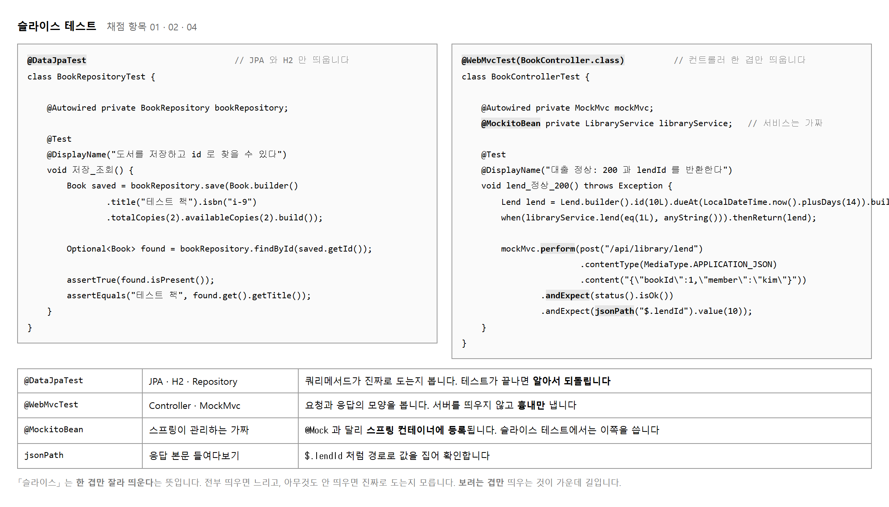
Repository 는 메서드 이름만 적어 두면 스프링이 쿼리를 만들어 줍니다.
그래서 진짜로 도는지 한 번은 확인해 두어야 합니다.
@DataJpaTest 는 JPA 와 H2 만 띄우므로 몇 백 밀리초면 끝납니다.
테스트가 끝나면 넣은 데이터가 알아서 되돌아갑니다. 돌릴 때마다 쌓일 걱정을 안 해도 됩니다.
Controller 는 요청을 받아 Service 에 넘기고 응답을 만듭니다. 여기서 볼 것은 요청과 응답의 모양이지 업무 규칙이 아닙니다. 그래서 Service 는 가짜로 두고 Controller 만 진짜로 띄웁니다.
mockMvc.perform(post("/api/library/lend")
.contentType(MediaType.APPLICATION_JSON)
.content("{\"bookId\":1,\"member\":\"kim\"}"))
.andExpect(status().isOk())
.andExpect(jsonPath("$.lendId").value(10));
| 쓰는 것 | 뜻 |
|---|---|
| perform() | 요청을 보냅니다. 서버를 띄우지 않고 흉내만 냅니다 |
| andExpect() | 응답을 확인합니다. 여러 개를 이어 붙일 수 있습니다 |
| status().isOk() | 상태 코드 200 인지 봅니다 |
| jsonPath("$.lendId") | 응답 본문에서 경로로 값을 집어냅니다 |
@Mock 과 @MockitoBean 은 다릅니다.
앞의 것은 그냥 가짜 객체이고, 뒤의 것은 스프링 컨테이너에 등록되는 가짜입니다.
@WebMvcTest 는 스프링이 띄우므로 @MockitoBean 을 써야 합니다.
여기를 잘못 쓰면 「의존성을 못 찾겠다」 는 오류로 시작조차 못 합니다.
목적 — 채점 항목 01 · 02 · 04 에 걸칩니다. 실습 7 에서 못 본 것을 여기서 봅니다 — 진짜로 저장되는가와 응답 모양이 맞는가입니다.
@DataJpaTest 로 데이터입출력을 봅니다Repository 는 메서드 이름만 적어 두면 스프링이 쿼리를 만들어 줍니다. 그래서 진짜로 도는지 한 번은 확인해 두어야 합니다.
@DataJpaTest
class BookRepositoryTest {
@Autowired BookRepository repo;
@Test
@DisplayName("TC-06 제목 일부로 찾으면 그 책만 나온다")
void findByTitleContaining() {
repo.save(new Book("자바의 정석", 3, 3));
repo.save(new Book("이펙티브 자바", 2, 2));
repo.save(new Book("파이썬 입문", 1, 1));
List<Book> found = repo.findByTitleContaining("자바");
assertThat(found).hasSize(2);
}
@Test
@DisplayName("없는 제목으로 찾으면 «빈 목록» 이다 — 예외가 아니다")
void findNothing() {
assertThat(repo.findByTitleContaining("코볼")).isEmpty();
}
}
@DataJpaTest 가 해 주는 것 | |
|---|---|
| JPA 와 H2 만 띄웁니다 | 몇 백 밀리초면 끝납니다 |
| 넣은 데이터가 알아서 되돌아갑니다 | 돌릴 때마다 쌓일 걱정을 안 해도 됩니다 |
둘째 시험을 눈여겨보십시오.
없는 것을 찾으면 예외가 아니라 빈 목록입니다.
이것을 모르고 assertThrows 를 걸면 시험이 틀립니다.
@WebMvcTest 로 인터페이스를 봅니다Controller 는 요청을 받아 Service 에 넘기고 응답을 만듭니다. 여기서 볼 것은 요청과 응답의 모양이지 업무 규칙이 아닙니다. 그래서 Service 는 가짜로 두고 Controller 만 진짜로 띄웁니다.
@WebMvcTest(BookController.class)
class BookControllerTest {
@Autowired MockMvc mvc;
@MockitoBean LibraryService service;
@Test
@DisplayName("TC-07 대출 요청이 200 과 반납기한을 돌려준다")
void lend_200() throws Exception {
LocalDateTime due = LocalDateTime.of(2026, 10, 3, 12, 0);
when(service.lend(eq(1L), anyString()))
.thenReturn(new Lend(1L, "hong", due.minusDays(14), due));
mvc.perform(post("/api/books/1/lend").param("memberId", "hong"))
.andExpect(status().isOk())
.andExpect(jsonPath("$.bookId").value(1))
.andExpect(jsonPath("$.dueAt").value("2026-10-03T12:00"));
}
}
| 쓰는 것 | 뜻 |
|---|---|
perform() |
요청을 보냅니다. 서버를 띄우지 않고 흉내만 냅니다 |
andExpect() | 응답을 확인합니다. 여러 개를 이어 붙입니다 |
status().isOk() | 상태 코드 200 인지 봅니다 |
jsonPath("$.bookId") | 응답 본문에서 경로로 값을 집어냅니다 |
2026-10-03T12:00:00 이라고 적으면 실패합니다.
JSON path "$.dueAt" expected:<2026-10-03T12:00:00>
but was:<2026-10-03T12:00>
LocalDateTime.toString() 은 초가 0 이면 생략합니다.
기대 결과를 짐작으로 쓰지 말고 한 번 찍어 보고 적으십시오.@Mock 과 @MockitoBean 을 구분합니다| 무엇 | 어디에 쓰나 | |
|---|---|---|
@Mock | 그냥 가짜 객체 | 단위 — 스프링이 없습니다 |
@MockitoBean |
스프링 통에 등록되는 가짜 | 슬라이스 · 통합 — 진짜를 바꿔 끼웁니다 |
예전 이름인 @MockBean 으로 배웠다면
프로젝트의 Boot 판을 확인하십시오. 이름이 바뀌었습니다.
인터페이스 슬라이스(@WebMvcTest) 쪽입니다.
[ 2 tests found ]
[ 2 tests successful ]
[ 0 tests failed ]
데이터입출력 쪽은 찾은 건수를 찍어 확인하는 편이 빠릅니다.
«자바» 로 찾은 건수 = 2
«코볼» 로 찾은 결과 = []
[ 2 tests found ]
[ 2 tests successful ]
[ 0 tests failed ]
assertThat 을 쓰십시오.
「2건이 나오겠지」 하고 적었다가
3건이 나와서 시험이 빨개지는 일이 흔합니다.
이펙티브 자바 와 자바의 정석 둘인데
자바스크립트 입문 을 섞어 두면 셋이 됩니다.재고 0 인 책으로 요청하면 상태 코드가 안 나옵니다.
assertThatThrownBy(() ->
mvc.perform(post("/api/books/2/lend").param("memberId", "hong")))
.hasRootCauseInstanceOf(OutOfStockException.class);
전역 핸들러가 없으면 MockMvc 는 예외를 감싸서 다시 던집니다.
status().is5xxServerError() 로는 못 잡습니다 —
응답 자체가 안 만들어지기 때문입니다.
핸들러를 붙이면 그때부터 상태 코드로 잡을 수 있습니다.
| 나오는 것 | 볼 곳 |
|---|---|
package … .test.autoconfigure.orm.jpa does not exist |
Boot 판이 다릅니다. 4 부터 슬라이스 어노테이션이 모듈별로 쪼개졌습니다 (실습 3) |
Name for argument of type [java.lang.Long] not specified |
-parameters 가 없습니다.
@PathVariable("id") 처럼 이름을 적으면 됩니다 |
No qualifying bean of type 'LibraryService' |
@MockitoBean 을 안 붙였습니다.
@WebMvcTest 는 Service 를 안 띄웁니다 |
Status expected:<200> but was:<404> |
경로가 틀렸습니다. @RequestMapping 앞부분까지 세어 보십시오 |
@DataJpaTest 에서 데이터가 쌓임 |
되돌리기가 꺼져 있습니다.
@Transactional 을 덮어쓰지 않았는지 보십시오 |
제출물 — 슬라이스 테스트 둘 + 각각의 통과 화면 +
@Mock · @MockitoBean 구분 표
스스로 확인 —
① 슬라이스가 둘 있습니까 (데이터입출력 · 인터페이스)
② @MockitoBean 을 썼습니까
③ 「없는 것을 찾으면 빈 목록」 을 시험했습니까
④ 기대 결과를 찍어 보고 적었습니까
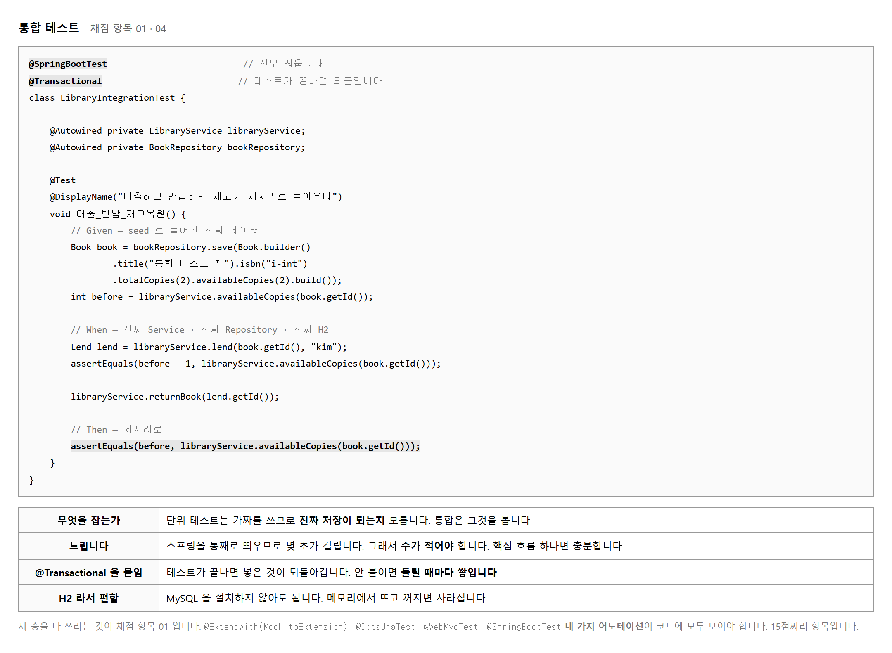
통합 테스트는 스프링을 통째로 띄우므로 몇 초씩 걸립니다. 많이 만들면 돌릴 때마다 기다리게 되어 아예 안 돌리게 됩니다. 업무의 줄기를 한 번 훑는 것 하나면 됩니다.
여기서 고른 줄기는 대출 → 반납 → 재고 복원입니다. 가짜가 하나도 없으므로 Service 가 진짜로 저장하고, Repository 가 진짜 쿼리를 날리고, H2 가 진짜로 값을 바꿉니다. 단위 테스트로는 못 보던 자리입니다.
| 붙이는 것 | 쓰임 |
|---|---|
| @SpringBootTest | 애플리케이션을 통째로 띄웁니다 |
| @Transactional | 테스트가 끝나면 넣은 데이터를 되돌립니다. 안 붙이면 돌릴 때마다 쌓입니다 |
테스트 네 파일이 채워졌고 명세서 한 장이 나왔습니다. 아직 돌려 보지 않았습니다. 다음 단원에서 처음 돌리는데, 그 화면이 제출물이 되므로 다 쓰고 나서 한 번에 돌리는 편이 낫습니다.
fail("TODO…") 가 남아 있지 않은지 훑으십시오.
한 줄이라도 남아 있으면 그 줄 때문에 실패가 늘어나
결함 때문에 실패한 건수와 어긋납니다.
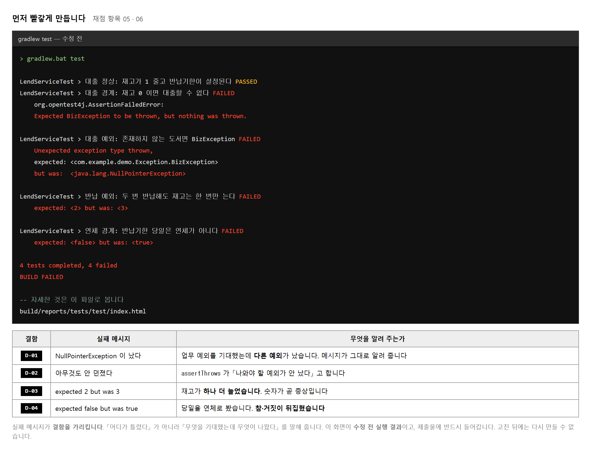
JUnit 의 실패 메시지는 「무엇을 기대했는데 무엇이 나왔다」 라는 꼴입니다. 이 형식이 그대로 결함의 증상이 됩니다.
| 메시지 | 읽는 법 |
|---|---|
| expected: <2> but was: <3> | 숫자가 하나 더 늘었습니다. 덜 빼거나 더 더한 곳이 있습니다 |
| expected: <false> but was: <true> | 참거짓이 뒤집혔습니다. 부등호나 부정을 봅니다 |
| nothing was thrown | 막았어야 할 것을 안 막았습니다. 조건이 좁습니다 |
| but was: NullPointerException | 없는 경우를 안 걸렀습니다. null 이 그대로 흘러갔습니다 |
다음 차례를 지키면 제출물이 저절로 모입니다.
build/reports/tests/test/index.html 을 열면
실패한 테스트마다 메시지와 줄 번호가 나옵니다.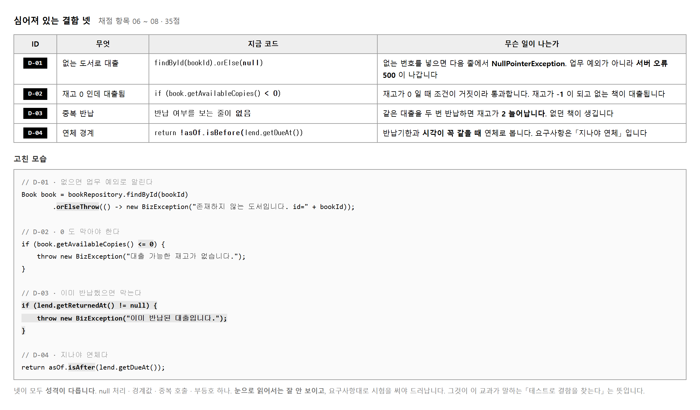
넷 모두 LibraryServiceImpl.java 안에 있습니다.
파일 하나만 보면 되지만, 그렇다고 눈으로 찾아지지는 않습니다.
넷 다 문법으로는 멀쩡한 코드이기 때문입니다.
| 결함 | 유형 | 왜 눈에 안 띄는가 |
|---|---|---|
| D-01 | 예외 처리 | orElse(null) 은 흔히 쓰는 꼴입니다. 뒤에서 터진다는 것만 안 보입니다 |
| D-02 | 경계값 | < 와 <= 는 글자 하나 차이입니다 |
| D-03 | 상태 검증 누락 | 없는 줄은 읽어서 찾을 수 없습니다 |
| D-04 | 경계값 | !isBefore 는 「이후이거나 같음」 인데 「이후」 로 읽힙니다 |
어느 것부터 고칠지를 정하는 것이 항목 06 입니다. 기준은 「그냥 두면 무엇이 더 망가지는가」 입니다.
이 판단을 결함 관리대장의 우선순위 칸에 숫자로 적습니다. 적어 두지 않으면 고친 차례가 우연처럼 보입니다.
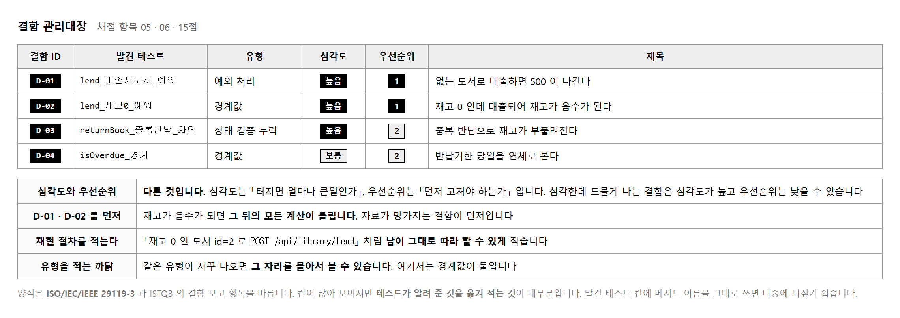
둘을 같은 것으로 적어 내는 일이 잦습니다. 뜻이 다릅니다.
| 칸 | 묻는 것 | 보기 |
|---|---|---|
| 심각도 | 터지면 얼마나 큰일인가 | 재고가 음수가 됨 → 높음 |
| 우선순위 | 먼저 고쳐야 하는가 | 자주 일어남 · 자료가 망가짐 → 1 |
심각한데 거의 안 일어나는 결함은 심각도가 높고 우선순위는 낮을 수 있습니다. 반대로 사소한데 모든 화면에 보이는 결함은 심각도가 낮고 우선순위가 높습니다. 이 과제에서는 D-01 · D-02 가 우선순위 1, D-03 · D-04 가 2 입니다.
남이 그대로 따라 해서 같은 증상을 볼 수 있어야 합니다.
-- 이렇게 적으면 따라 할 수 있습니다
1. H2 콘솔에서 재고가 0 인 도서의 id 를 확인한다 (seed: '테스트 주도 개발')
2. POST /api/library/lend 에 { "bookId": 2, "member": "kim" } 을 보낸다
3. 200 이 돌아오고 book.available_copies 가 -1 이 된다
-- 이렇게 적으면 못 따라 합니다
재고가 없을 때 대출이 됨
lend_재고0_예외 라고 적어 두면 나중에 회귀를 돌렸을 때
그 줄만 찾아보면 됩니다. 「대출 테스트」 처럼 적으면 다시 뒤져야 합니다.
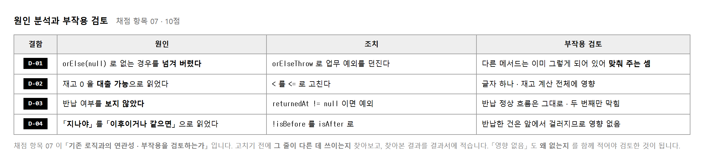
「29번째 줄이 틀렸다」 는 원인이 아니라 위치입니다. 무엇을 잘못 읽었기에 그렇게 썼는가 를 적어야 원인이 됩니다.
| 이렇게 적으면 부족 | 이렇게 적으면 원인 |
|---|---|
| 부등호가 틀렸음 | 재고 0 을 대출 가능한 상태로 읽어 경계를 한 칸 밀어 두었음 |
| null 체크 누락 | 조회 실패를 업무 예외가 아니라 빈 값으로 넘겨 다음 줄에서 터짐 |
고칠 줄을 정했으면 그 이름이 어디서 또 쓰이는지 찾아봅니다. IDE 의 「사용처 찾기」 (Find Usages) 로 한 번 훑으면 됩니다.
isOverdue 는 Service 안에서만 쓰이므로 밖으로 번지지 않습니다.BizException 은 이미 @RestControllerAdvice 가 받고 있어
400 으로 나갑니다.isOverdue 는 LibraryServiceImpl 안에서만 쓰이고
반납된 건은 앞 조건에서 걸러지므로 영향 없음」 처럼 적으면 항목 07 이 채워집니다.
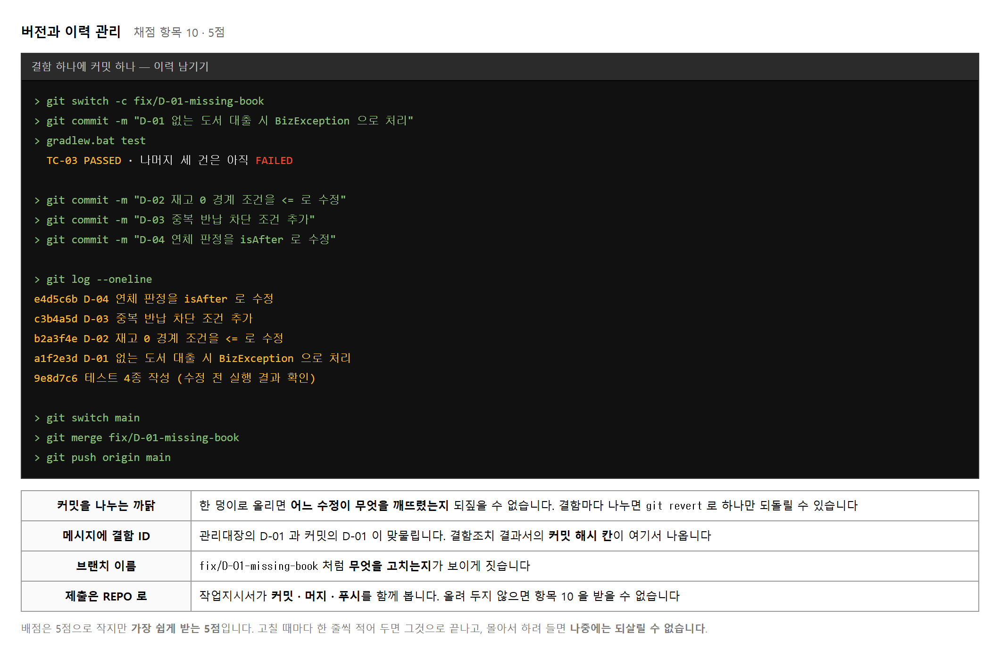
넷을 한꺼번에 고치고 한 번 돌리면 어느 수정이 무엇을 고쳤는지 알 수 없습니다. 우선순위 차례대로 하나 고치고 돌리기를 넷 되풀이하십시오.
| 차례 | 결함 | 고친 뒤 통과하는 것 | 아직 실패 |
|---|---|---|---|
| 1 | D-02 | TC-02 | TC-03 · TC-04 · TC-05 |
| 2 | D-01 | TC-02 · TC-03 | TC-04 · TC-05 |
| 3 | D-03 | TC-02 ~ TC-04 | TC-05 |
| 4 | D-04 | 전부 | 없음 |
실패 건수가 4 → 3 → 2 → 1 → 0 으로 줄어드는 모습이 그대로 조치 과정의 기록이 됩니다.
git commit -m "D-02 재고 0 경계 조건을 <= 로 수정" git commit -m "D-01 없는 도서 대출 시 BizException 으로 처리"
관리대장의 D-02 와 커밋의 D-02 가 이어집니다.
결함조치 결과서의 커밋 해시 칸에 git log --oneline 의 앞 일곱 자를 옮겨 적으면
문서와 저장소가 맞물립니다.
git push 까지 하고 저장소 주소를 제출물에 적으십시오.
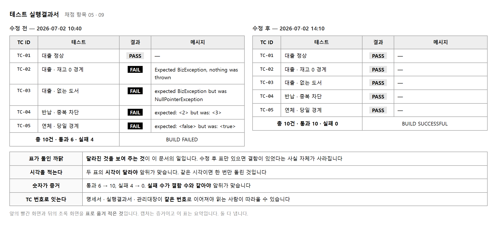
고친 뒤 전부 다시 돌려 보는 일입니다. 고치다가 멀쩡하던 데를 깨뜨렸는지 보려는 걸음입니다.
고친 테스트만 돌려서는 모릅니다. D-02 를 고치려고 재고 조건을 바꿨는데 반납 쪽에서 같은 값을 쓰고 있었다면 반납이 깨집니다. 그것은 대출 테스트로는 안 보입니다.
> gradlew.bat test // --tests 를 붙이지 않고 전부 돌립니다 BUILD SUCCESSFUL in 18s 10 tests completed, 0 failed
| 언제 | 무엇을 적나 | 숫자 |
|---|---|---|
| 수정 전 | 실패한 TC 와 메시지 | 통과 6 · 실패 4 |
| 수정 후 | 전부 통과 | 통과 10 · 실패 0 |
두 표의 돌린 시각이 달라야 앞뒤가 맞습니다. 같은 시각으로 적혀 있으면 한 번만 돌리고 표를 둘로 나눈 것으로 읽힙니다.
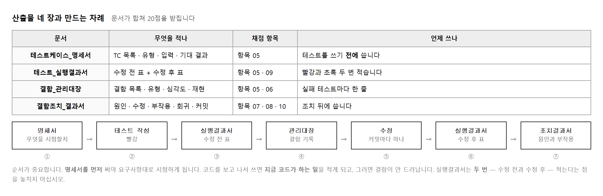
따로 쓴 문서 넷이 아니라 하나의 이야기가 되어야 합니다. 이어 주는 것이 번호입니다.
| 잇는 것 | 어디와 어디 | 보기 |
|---|---|---|
| TC 번호 | 명세서 ↔ 실행결과서 | TC-02 가 양쪽에 |
| 발견 테스트 | 실행결과서 ↔ 관리대장 | lend_재고0_예외 |
| 결함 ID | 관리대장 ↔ 조치 결과서 | D-02 가 양쪽에 |
| 커밋 해시 | 조치 결과서 ↔ 저장소 | b2a3f4e |
@ExtendWith(MockitoExtension.class) ·
@DataJpaTest · @WebMvcTest ·
@SpringBootTest 를 찾아봅니다.fail("TODO…") 가 남아 있지 않은가docs/산출물_양식/ 의 마크다운을 그대로 쓰면 됩니다.
새로 만들지 말고 빈 칸을 메우는 쪽이 빠르고 빠뜨릴 일도 적습니다.
양식의 칸 이름이 곧 채점자가 찾는 이름입니다.
아래 여덟 가지가 되풀이되는 감점입니다. 이 교과의 감점은 실력보다 순서에서 더 많이 납니다. 테스트를 잘 써 놓고도 먼저 고쳐 버려 증거가 없어지는 일이 잦습니다.
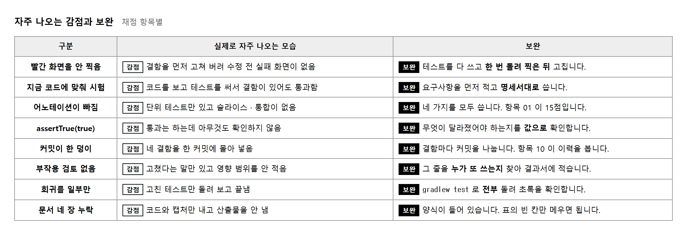